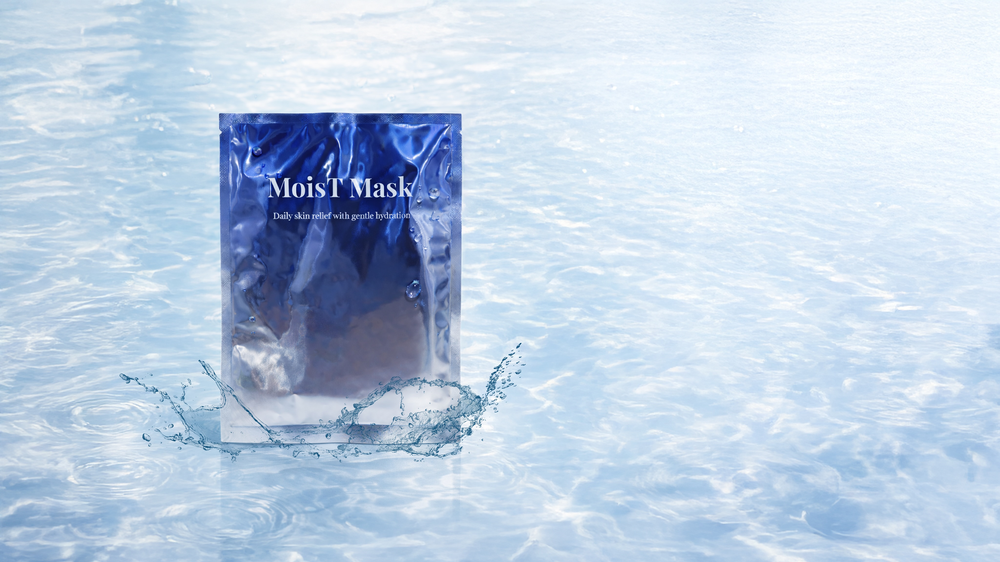
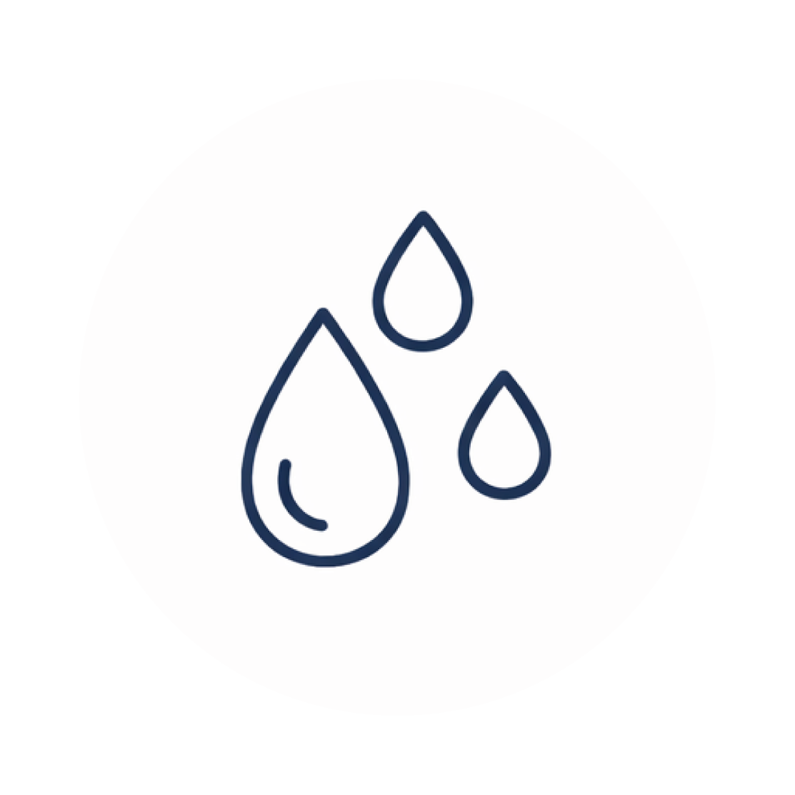
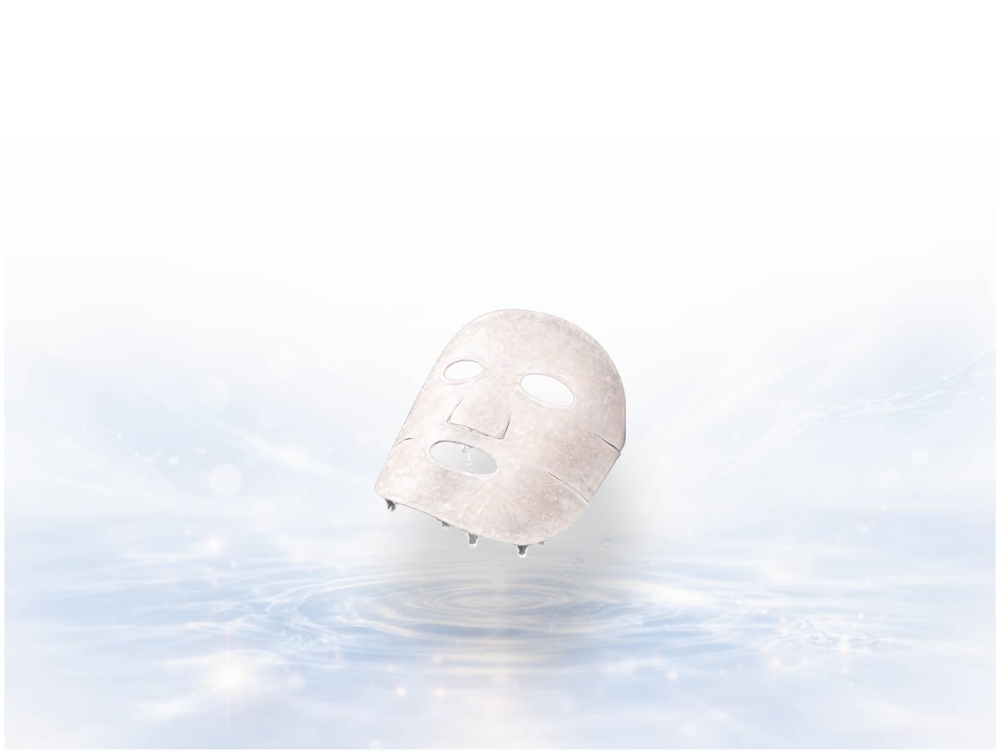
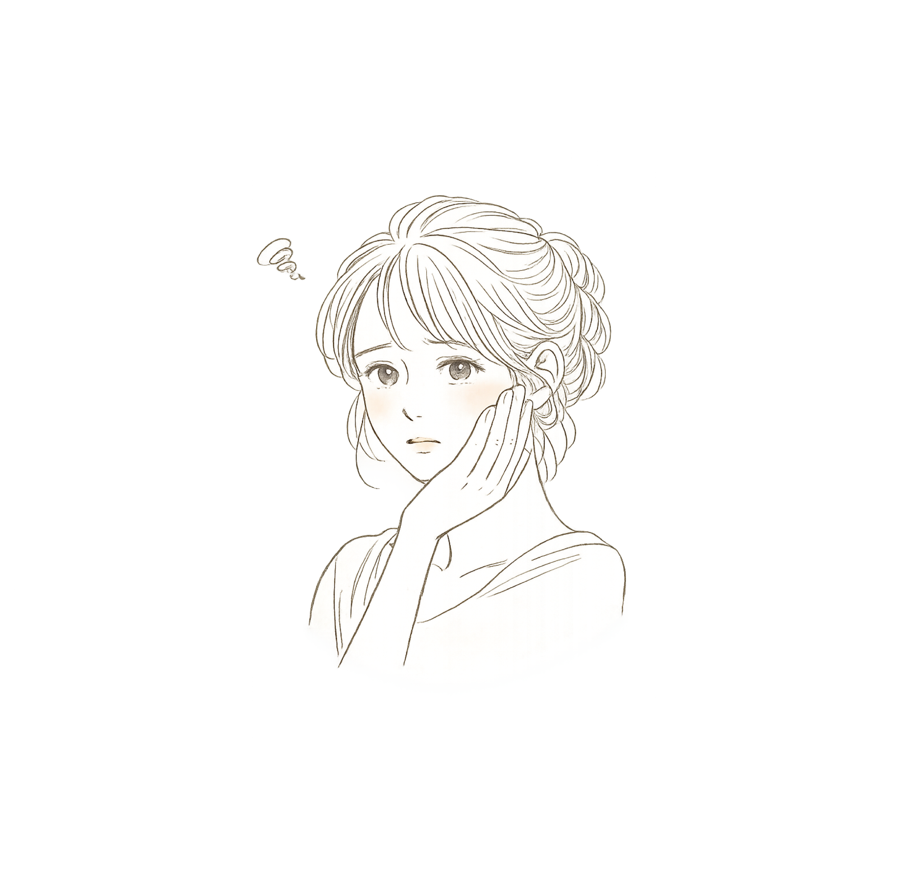
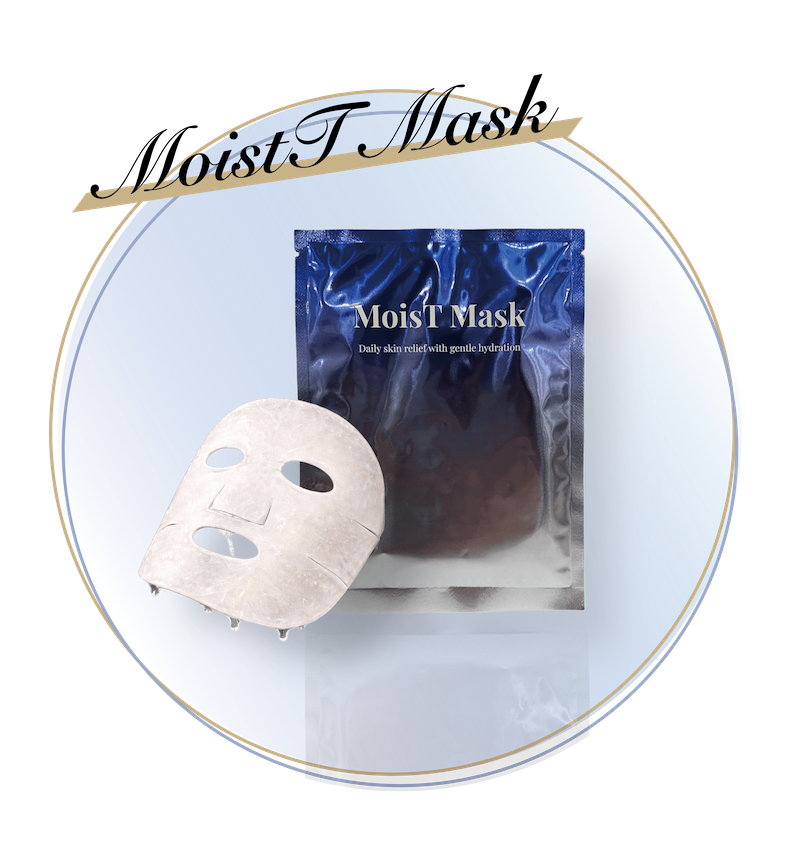
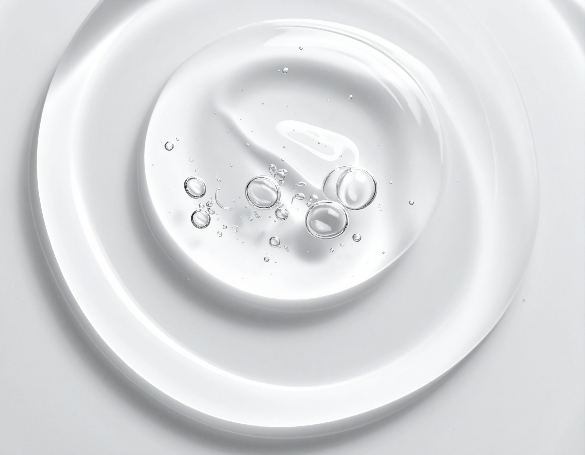
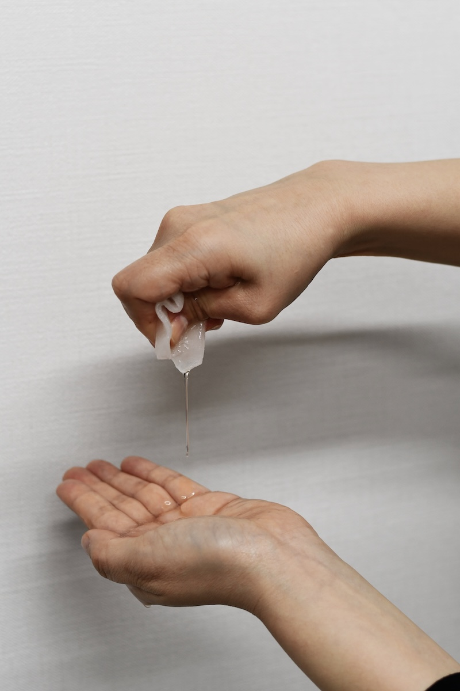
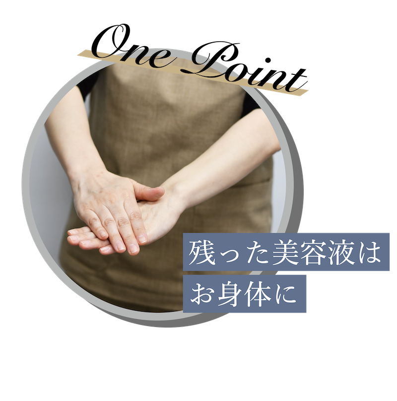
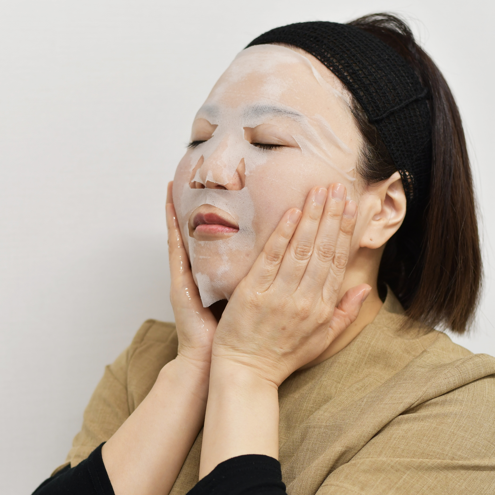

これが
満ちるうるおい
肌の調子をそっと支えるケア
頑張らなくても、
しっとりした状態が続く毎日へ

肌の調子をそっと支えるケア
頑張らなくても、
しっとりした状態が続く毎日へ
肌の調子は、季節や生活リズムによって
日々少しずつ変わっていきます。
そんな変化に無理に抗うのではなく、
その時々の肌に寄り添うケアを
大切にしたいと考えました。
やさしく、でもしっかりうるおいたい方へ。

乾燥対策
うるおい不足を感じるときに。
ゆらぎケア
季節の変わり目にもやさしく。
毎日の保湿
毎日ではなく“必要なとき”にも。
ご褒美時間
ひと息つく時間のスキンケアに。
低刺激ケア
やさしい使い心地が好きな方へ。
守る保湿
乾きやすい肌を包み込むように。
うるおいを、
やさしく満たすために。



美容施術後の肌は、
乾燥・刺激・赤みなどが起こりやすく、
いつもよりデリケートな状態。
そんな時期の肌にも速く寄り添えるよう、
やさしい使い心地とうるおいにこだわった
フェイスマスクです。
Moist Maskをご利用いただいた方の声です。
セラミド ※1
肌のうるおいは、逃がしにくい状態を保つことも大切です。乾きやすい肌を、しっとりと感じられる状態へ導くために配合しています。
プロテオグリカン ※2

年齢や環境の変化で、肌はゆらぎやすくなります。毎日のケアの中で、肌をすこやかな状態に整えることを意識して取り入れました。
ヒアルロン酸 ※3
うるおいは、一時的ではなく続くことが大切です。肌を包み込むような使い心地で、しっとりとした感触を支えます。
※1 セラミドNP ※2 水溶性プロテオグリカン ※3 ヒアルロン酸Na


3つの保湿成分を配合するだけでなく、
シートが美容液をたっぷり含み、
肌全体を包み込むように設計しています。
美容液はたっぷり25ml使用しており、
うるおいを与えるだけでなく、
心地よく感じられる時間を大切にしました。
How to use
洗顔後の清潔なお肌にご使用ください。
袋を開け、マスクを取り出します。
袋の中には美容液がたっぷり含まれていますので、残さずご使用ください。

袋を開けてマスクを取り出し、
目と口の位置をお顔に合わせてのせます。
顔の中心から外側へ、やさしく押さえるようになじませると、きれいに密着します。
5〜10分ほどおいた後マスクを優しく外します。
お肌に残った美容液は、そのままなじませてください。
その後は、いつも通りのお手入れを行ってください。